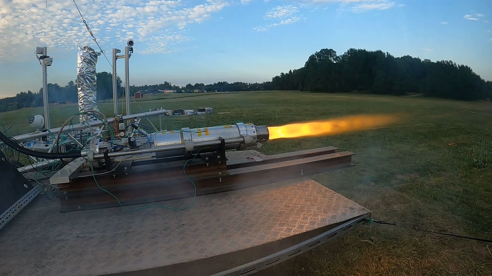

Propulsion
ÆSIR hybrid rocket.
Hands-on propulsion work, sensor calibration and static-fire testing for Mjolnir.

01 / OVERVIEW
Project overview
Mjolnir is ÆSIR’s hybrid rocket project at KTH, using paraffin fuel and nitrous oxide. Development combines propulsion modelling, mechanical integration, instrumentation and ground testing. My role in the propulsion and structures team connected analytical work with the practical preparation and assessment of static-fire tests.
02 / MY CONTRIBUTION
My contribution
- Contributed to propulsion development, thermodynamic analysis and CFD work.
- Participated in sensor calibration and static-fire testing.
- Analysed load-cell measurements for thrust and oxidiser-tank loading.
03 / TESTING
Testing and model feedback
The team’s August 2026 review brought together results from the summer static-fire campaign. Measured thrust histories were compared with propulsion predictions and used to refine the models. The review also identified fuel-regression and thermal-protection considerations for further development.
04 / PROJECT GALLERY
Hardware and test data
Select an image to view it at a larger size.
PROJECT CONTEXT
The photographs and thrust comparison show team hardware and team-level test results. My contribution is described above; the campaign and its outcomes involved several team members.
AUTHORSHIP & SOURCE
Team project: KTH Rocketry Team (ÆSIR). Personal role and activities are documented in my CV. Photographs were supplied as ÆSIR project material. The firing photograph and thrust comparison are reproduced from the team’s general meeting of 26 August 2026, slides 4–5.